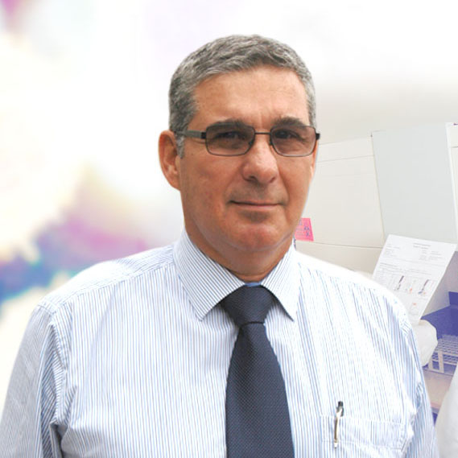
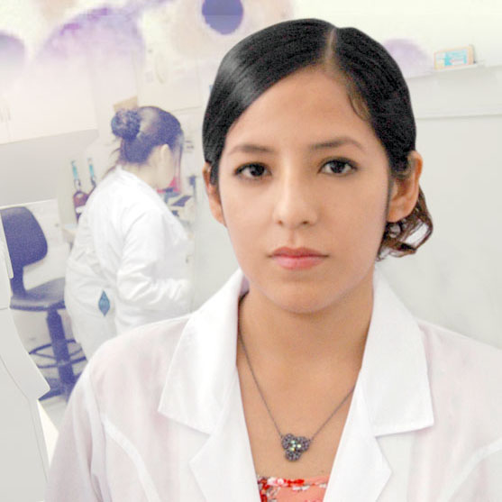
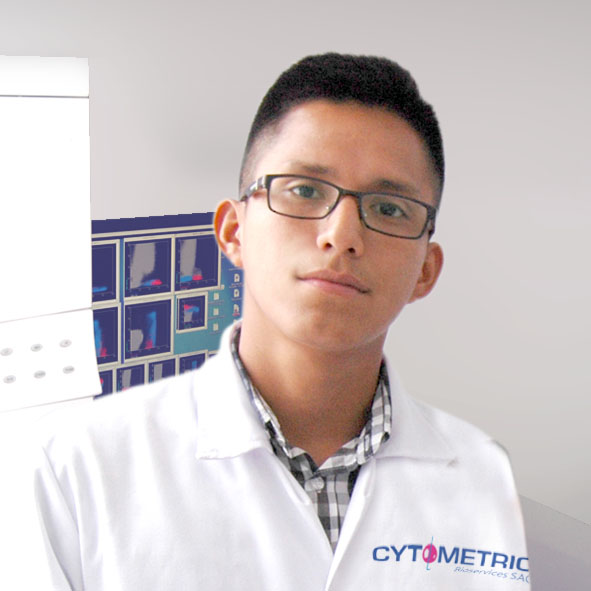

Servicios
Hematología
Inmunología
Nosotros
Staff
Contacto

Dr. Richard Rodrigo Dyer Velarde-Alvarez
CMP 17738 | RNE 11500 - Médico Anátomo Patólogo
Director Científico

Lic. Judith Jeniffer Azaña Yupanqui
CTMP 7526 - Tecnólogo Médico
Jefe de Laboratorio

LIC. CESAR RIVERA ORCOAPAZA
Tecnólogo Médico